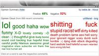
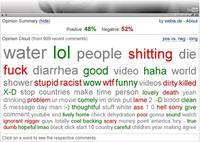

<script type="application/ld+json">
{
  "@context":"http://schema.org/",
  "@type":"Research",
  "name":"OpinionCloud",
  "description":"",
  "url":"https://webis.de/research/opinioncloud.html",
  "keywords":[
    "opinioncloud"
  ], 
  "creator":[
    {
      "@type":"Organization",
      "url":"https://webis.de/",
      "name":"The Web Technology & Information Systems Network",
      "alternateName":"Webis"
    },
    {
        "@type":"Person", 
        "url":"http://www.uni-weimar.de/medien/webis/people/#potthast",
        "affiliation":"Bauhaus-Universit\u00e4t Weimar", 
        "name":"Potthast, Martin"
    }
  ],
  "includedInDataCatalog":{
  },
  "distribution":[
  ]
}
</script>

<main class="uk-section uk-section-default">
    <div class="uk-container">
        <h1>OpinionCloud</h1>

        <ul class="uk-list">
            <!-- Comment out sections you do not provide -->
            <li><span data-uk-icon="chevron-down"></span> <a href="#synopsis">Synopsis</a></li>
            <li><span data-uk-icon="chevron-down"></span> <a href="#research">Research</a></li>
            <li><span data-uk-icon="chevron-down"></span> <a href="#people">People</a></li>
            <li><span data-uk-icon="chevron-down"></span> <a href="#publications">Publications</a></li>
        </ul>
    </div>

    <div class="uk-container uk-margin-medium">
        <!--
        SECTION Synopsis
        -->
        <h2 id="synopsis">Synopsis</h2>

       <p>In this project we develop OpinionCloud, a new opinion summarization technology for Web comments in general and YouTube and Flickr in particular. Popular Web items often get up to thousands of comments and in order to get an idea about the crowd's overall opinion one has to read all of them, which is of course impractical. Our summarization approach helps to retrieve this important piece of information by generating an opinion word cloud for a given set of comments. We operationalize the technology in browser add-ons for <a data-htmlarea-external="1" class="external-link" href="https://addons.mozilla.org/en-US/firefox/addon/11283">Firefox</a> and <a data-htmlarea-external="1" class="external-link-new-window" href="https://chrome.google.com/extensions/detail/jobpaepjhflihdcgajlbmkipfdmjmkda">Chrome</a> which summarize the comments on a YouTube video when the user starts watching it.</p>


        <!--
        SECTION Research
        -->
        <h2 id="research">Research</h2>

        <div>
        <p>Our research on opinion summarization of Web comments boils down to two research areas: sentiment analysis and summary visualization. The former deals with the classification of words as positive, negative, or neutral, whereas the latter deals with the design of an accessible visual representation of a set of opinions.</p>

        <p><em>Sentiment Analysis &amp; Opinion Visualization</em>. In sentiment analysis a word's polarity can be identified by measuring its co-occurrence with words whose polarity is known in advance, i.e., if a given word occurs with a high probability in the vicinity of positive (negative) words it can be considered positive (negative) as well. Neutral words, however, tend to occur arbitrarily next to words of both polarities. We use this idea to train a dictionary of opinion words which also contains slang terms that are often used in comments. The dictionary is then used to classify the words of comments into positive, negative, and neutral words. By default, words that are not contained in the dictionary are considered neutral.</p>
        <figure>
            
            <figcaption>Left: positive and negative words. Right: all words unfiltered.</figcaption>
        </figure>
        
        </div>
        <p>The visualization of the opinions found in a set of comments is done as shown in the left figure. The words are arranged in a cloud where the color of a word denotes its polarity and the size of a word its frequency in the comments. This visualization is comparable to the well-known tag clouds for folksonomies.</p>
        
        <p><em>Why YouTube ?</em> We have chosen YouTube as a working example for our technology since a comment on YouTube usually contains only some kind of opinion exclamation, and, a large amount of comments is available. For a user, reading these comments is time-consuming and boring, or put another way, comments on YouTube are neither universally accessible nor useful. However, for an information retrieval researcher these comments form a unique large-scale corpus of highly opinion-coloured language. For instance, to train our dictionary we have analyzed about 9 million YouTube comments.</p>


        <!--
        SECTION People
        -->
        <h2 id="people">People</h2>
       <ul><li><a title="Martin Potthast" class="internal-link" href="http://www.uni-weimar.de/medien/webis/people/#potthast">Martin Potthast</a></li></ul>
<p>Students:&nbsp;Steffen Becker</p>

	<!--
	SECTION Publications
	-->
	<h2 id="publications">Publications</h2>
        <div id="publications-list">
        </div>
	</div>
        </div>
</main>

<script src="https://webis.de/js/bibentry.js"></script>
<script>
includeBibentries(document.getElementById("publications-list"), "projects:opinioncloud");
</script>
